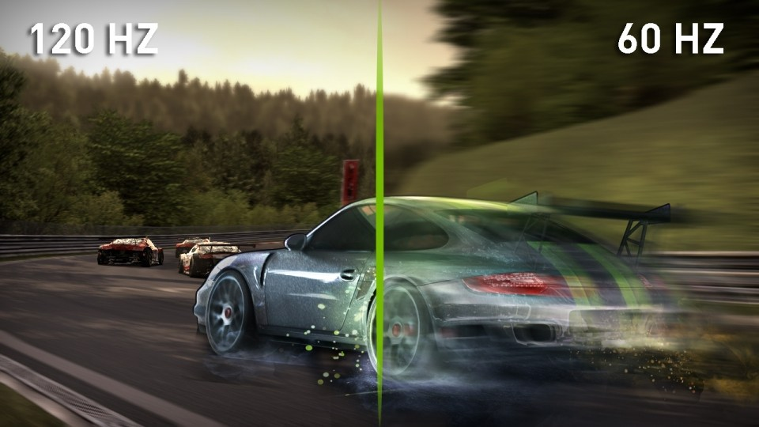
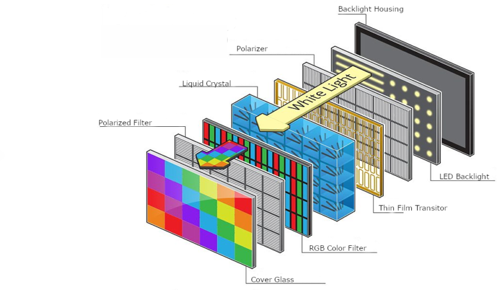

-

Resolution
Resolution is a measure used to describe the sharpness and clarity of an image or picture. It is often used as a metric for judging the quality of monitors, printers, digital images and various other hardware and software technologies.
-

Aspect Ratio
Aspect ratio describes the ratio between the width and height of an image or screen. A 1:1 aspect ratio, for example, is a square.The first number always refers to the width, and the second number refers to the height. If the ratio of an image is different than the ratio of your screen, you may not see the whole image. Images won’t fit properly if the screen is narrower than the image.
-

Refresh Rate
The refresh rate measures how quickly the display updates. In other words, how often and quickly the content on the screen refreshes. Measured in Hertz (Hz), the refresh rate counts the number of times the display refreshes every second it is on. A 60Hz display refreshes 60 times per second, 90Hz is 90 times per second, and 120Hz is 120 times per second.
-
Screen Size
The numbers above represent the viewport size of your current screen, which is the visible display area of your screen. This is often slightly smaller than your screen resolution. A web design viewport is defined as a rectangular area (measured in pixels) that is displayed on the screen and determines how the content is arranged and where to scroll through the text wrappers or windows to see the entire web page.
-
Panel Type
Resolution is a measure used to describe the sharpness and clarity of an image or picture. It is often used as a metric for judging the quality of monitors, printers, digital images and various other hardware and software technologies.
-

Display Technology
A display is a computer output surface and projecting mechanism that shows text and often graphic images to the computer user, using a cathode ray tube ( CRT ), liquid crystal display ( LCD ), light-emitting diode, gas plasma, or other image projection technology